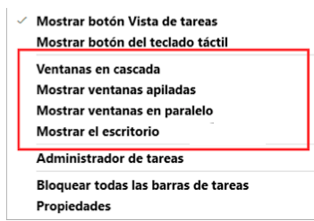
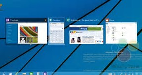
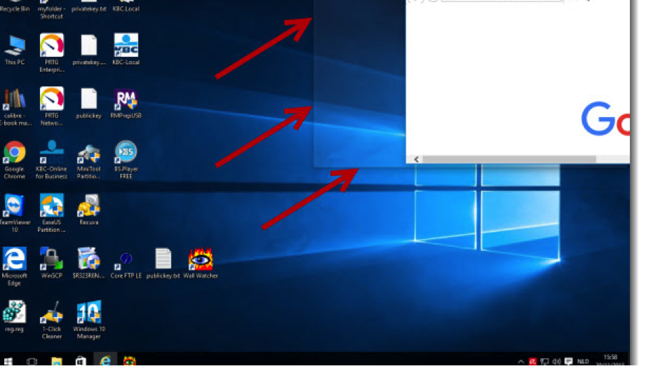

En muchas ocasiones trabajaremos con más de una aplicación simultáneamente. Dispondremos de varias ventanas en la pantalla y a veces nos podrá interesar poder ver dos o más de ellas a la vez. Para ello puede sernos útil saber organizarlas.
Windows 10 ofrece las mismas opciones de organización que en otras versiones anteriores, pero además, incorpora una novedad que explicaremos a continuación.
El método clásico es haciendo clic sobre la barra de tareas, con el botón derecho del ratón. Visualizaremos las siguientes cuatro opciones:

- Ventanas en cascada: Sitúa las ventanas que están abiertas en el escritorio una tras otra y las redimensiona. Las va colocando con un cierto desplazamiento entre ellas, de modo que vemos la que se sitúa al frente, pero tenemos a mano las barras de título del resto para pasarlas a primer plano en cualquier momento.

- Mostrar ventanas apiladas: Sitúa las ventanas que están abiertas en el escritorio una bajo la otra. No importa cuántas ventanas sean, pero puede resultar poco práctico cuando tenemos muchas ventanas ya que el espacio proporcional para cada una podría ser demasiado estrecho para trabajar con ellas. Recomendamos utilizarlo como mucho para dos o tres.
- Ventanas en paralelo: Exactamente igual que mostrar en ventanas apiladas, pero en vez de situarlas en horizontal, lo hace en vertical, una junto a la otra.
- Mostrar el escritorio: Es equivalente a minimizar todas las ventanas. Las teclas rápidas para esta acción son Windows + D. En ambos casos, tanto con el menú de la barra de tareas, como con las teclas rápidas, si volvemos a pulsar las ventanas volverán a su estado original, siempre y cuando no hayamos abierto otra ventana.
- Minimizar todo, excepto una ventana: A veces, mientras trabajemos, llegaremos a abrir muchas ventanas. Es posible que nos venga bien minimizar todo, excepto una ventana en concreto con la que pensamos seguir trabajando. Ya no tendremos que ir una a una, podremos reorganizar el escritorio de una forma rápida. Esta característica de Windows 10 se llama Aero Shake y fue implementada por primera vez en Windows 7. Para utilizarla, seleccionamos la barra de título de la ventana que nos interesa y movemos el ratón de derecha a izquierda o de arriba a abajo, rápidamente. Se trata de darle al ratón una pequeña sacudida. Si volvemos a hacerlo, las ventanas volverán a su estado anterior.
Todas estas opciones funcionan de manera grupal, es decir, estructuran las ventanas dentro de la pantalla siempre y cuando no estén minimizadas. A continuación veremos otra característica de Windows 10 para posicionar las ventanas de forma individualizada.
- Arrastrar la ventana en la superficie del escritorio. Esta función se llama Aero Snap y es una característica de Windows 10 también implementada por primera vez en Windows 7. Si arrastramos la ventana hacia el lado derecho o el lado izquierdo de la pantalla, se ajustará automáticamente a la mitad del tamaño de la misma, incluso si la tenemos maximizada. Windows 10 interpreta que si tratas de posicionarla es porque la quieres reducir para trabajar con más ventanas. Si por el contrario, la arrastramos hacia la parte superior de la pantalla, Windows 10 maximizará la ventana de nuevo. En ambos casos veremos un pequeño relieve sombreado que nos indicará cómo va a ajustarse y al soltar se aplicará. Si hay más ventanas abiertas, éstas se ajustarán a la mitad libre de la pantalla.

Esta característica está enfocada a un manejo táctil de la pantalla, obviando el uso de menús.